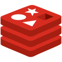
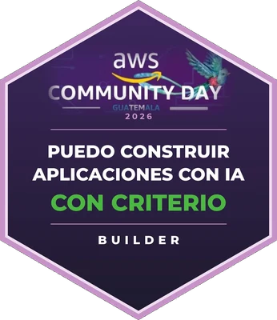

Mariano Roberto
Rac Noguera
Construyo software full stack y entiendo lo que corre debajo: contenedores, Kubernetes, el kernel de Linux y las redes. Estudio Ingeniería en Ciencias y Sistemas en la USAC y trabajo como desarrollador freelance con TechnoMaya.
Proyectos
Lo que he construido en la universidad y para clientes, de la interfaz al kernel y a la red. Cada proyecto enlaza a su código y explica cómo probarlo.
Experiencia
Desarrollador freelance & Agente de Ventas
Como freelancer con TechnoMaya desarrollo software a medida y aplicaciones web y móviles para clientes en Guatemala, y acompaño la venta consultiva de esos proyectos.
Mentor
Acompaño a misioneros nuevos aplicando los principios de Preach My Gospel, en coordinación con el liderazgo de misión. Enfoco las sesiones en habilidades prácticas de enseñanza, indicadores clave de conversión, y el desarrollo espiritual y profesional de cada misionero.
Executive Assistant, Team Lead & Volunteer Mentor
Liderazgo de operaciones para más de 150 colaboradores, mentoría e instrucción en talleres de desarrollo profesional, resolución de conflictos y comunicación intercultural.
Educador de Matemática y Física
Instrucción académica para estudiantes de 6to grado a diversificado, diseñando currículos enfocados en razonamiento lógico y resolución de problemas complejos.
Lo que aporto
Lenguajes & herramientas
Cloud e infraestructura

gRPC & ProtobufRedes
Fundamentos
Bases de datos

Valkey / Redis DBeaverBlandas
Bitácora
Notas cortas sobre problemas reales que encontré en mis proyectos: qué falló, cómo lo encontré y qué cambié.
El OOMKill que no venía de las peticionesThe OOMKill that didn't come from requests
A 1 250 peticiones por segundo mis pods de Rust morían por memoria. La causa estaba en conexiones que nadie estaba usando.At 1,250 requests per second my Rust pods were dying from memory. The cause was connections nobody was using.
Zot rechazaba mis imágenes: Docker v2 contra OCIZot kept rejecting my images: Docker v2 vs. OCI
Un 415 al subir imágenes a un registro privado, dos veces en dos proyectos, y la diferencia entre dos formatos de manifiesto que parecen iguales.A 415 when pushing images to a private registry, twice in two projects, and the difference between two manifest formats that look the same.
Buscando la syscall con la que Docker mata un contenedorHunting for the syscall Docker uses to kill a container
Mi sonda eBPF sobre kill() capturaba eventos todo el tiempo, pero ninguno era de Docker. Así encontré pidfd_send_signal.My eBPF probe on kill() captured events all the time, but none of them came from Docker. This is how I found pidfd_send_signal.
Un poco de contexto
Soy estudiante de Ingeniería en Ciencias y Sistemas en la Universidad de San Carlos de Guatemala, con fluidez avanzada en inglés y una fuerte ética de trabajo. Disfruto colaborar en entornos diversos y multiculturales, y mi meta es aportar conocimiento técnico a equipos de desarrollo donde pueda aprender de mentores experimentados y crecer junto a nuevos retos.
Certificaciones e insignias
Insignias digitales verificadas: de AWS Community Day Guatemala por construir con IA, y de Missionary Training (MTC) por mi desarrollo como Mentor.

Puedo construir aplicaciones con IA con criterio
Obtenida en la charla «Construyendo aplicaciones con Claude Code y Kiro», respondiendo 5 preguntas en APEX Arcade sobre cómo construir con IA con criterio.
Resource Proficiency
Reconoce el dominio de los recursos fundamentales y su uso constante al enseñar: basar la instrucción en ellos, modelar su uso y guiar a cada persona a encontrar respuestas por sí misma.
Instructional Excellence
Reconoce el dominio de tres modelos de instrucción para facilitar experiencias de aprendizaje significativas: explicar con sencillez, demostrar, acompañar, dar retroalimentación y reforzar cuando hace falta para guiar a cada persona hacia el éxito.
Learner-Focused Development
Reconoce la promoción del compromiso activo y el crecimiento personal de cada persona a la que se instruye, generando confianza, altas expectativas y un entorno que habilita el aprendizaje.
Vision and Alignment
Reconoce la capacidad de guiar a otros hacia sus metas alineando la instrucción con los objetivos de la organización, conectando cada sesión con su propósito y misión.
Certificados
Formación y descarga
Educación
- Universidad de San Carlos de Guatemala — Ingeniería en Ciencias y Sistemas, 7mo semestre (en curso)
- Colegio Jesús Rey de Gloria — Bachillerato en Computación (2020)
- Reconocimiento a la excelencia académica — Universidad de San Carlos de Guatemala (2 ocasiones)
Versión ATS: solo texto, sin foto ni diseño, lista para portales de empleo y sistemas automáticos de selección.
Idiomas
- Español — Nativo
- Inglés — Avanzado
- Miskitu — Intermedio
Contacto y redes
¿Tienes un negocio?
Sitios web, sistemas a medida y apps móviles para negocios en Guatemala.
¿Tienes un proyecto en mente?
Cuéntame tu idea y te ayudo a convertirla en software que funcione para tu negocio.